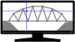

ASCE Bridge Designer, Cloud Edition (staging)
This isn't the release version!
The Bridge Designer here is
for development and testing only. Unless you're a tester,
you'll want the
official ASCE release. We
thank ASCE for hosting the application!
This version may have experimental features and bugs. It is not guaranteed to be
compatible with the release version.
About the App...
ASCE Bridge Designer, Cloud Edition is the newest version of a free, open source application available since 2002.
Millions have used it to learn basics of engineering design. Along with other improvements, this version makes
Bridge Designer more accessible. Only a web browser and computer with a mouse-like pointer are needed. No software
to install. Chromebooks work well. Get started with
Bridge Designer help.
Each user of Bridge Designer solves the problem of designing and testing a highway bridge. For the test, a
simulated truck load drives over the bridge to ensure it's strong enough.
But that's not all! The most successful bridge is the one with lowest cost. ASCE Bridge Designer continuously
shows the cost of the current design based on the amount of earth to be moved at the bridge site, the design's
complexity, and the kind and amount of materials used. Iterate to see how low you can get the cost of your bridge!
Compete to see whose is best!
Important news about the old desktop version
Effective July 1, 2026, the desktop version of the Bridge Designer will be discontinued. Binaries will no longer
be downloadable.
Testers please read!
Thanks for volunteering to test the Bridge Designer. We need your problem reports, suggestions, and questions!
Email them to
bridgedesignerteam@gmail.com.
A note on helpful input. We need enough context to understand your problem, suggestion,
or question. Specifically, bug reports must have enough information for us to reproduce the bug on our end. Here's
a list of information that's often useful:
-
Description. A sentence or two explaining what's going wrong, your suggestion, or
question.
-
A few details. For bugs, these are the the steps needed to reproduce. Tell us
- Which browser you're using. Include either "most recent" or a version number.
- A list - in order - of clicks and keystrokes needed to create the problem.
- At the point where the bug appears, say what you expected to see and what you actually saw.
For questions and suggestions, say just enough to make your intent clear. Pictures can help!
-
Bridge files. If your problem, suggestion, or question concerns a specific bridge
design, save it to a file and attach that to your email or Github issue.
-
Pro tip: Github doesn't like the .bdc file name
extension. Work around this by renaming the file, changing it to .txt.
-
Screen shots. If you can catch a bug red-handed with a screen shot, include it!
Same if a screen image helps explain your question or suggestion.
Links